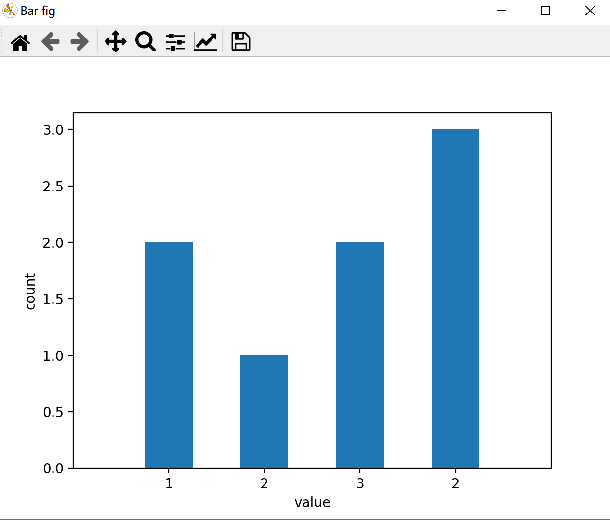
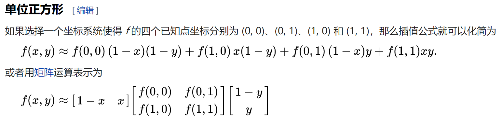

用 Hexo 写 blog 前的笔记
Python
Snake边缘检测算法
使用pickle进行数据的保存与读取
保存
import pickle
a_dict = {'da': 111, 2: [23,1,4], '23': {1:2,'d':'sad'}}
# pickle a variable to a file
file = open('pickle_example.pickle', 'wb')
pickle.dump(a_dict, file)
file.close()读取
# reload a file to a variable
with open('pickle_example.pickle', 'rb') as file:
a_dict1 =pickle.load(file)
print(a_dict1)matplotlib.pyplot使用
import matplotlib.pyplot as pltmatpltlib.pyplot.figure(
num = None, # 设定figure名称。系统默认按数字升序命名的figure_num（透视表输出窗口）e.g. “figure1”。可自行设定figure名称，名称或是INT，或是str类型；
figsize=None, # 设定figure尺寸。系统默认命令是rcParams["figure.fig.size"] = [6.4, 4.8]，即figure长宽为6.4 * 4.8；
dpi=None, # 设定figure像素密度。系统默命令是rcParams["sigure.dpi"] = 100；
facecolor=None, # 设定figure背景色。系统默认命令是rcParams["figure.facecolor"] = 'w'，即白色white；
# 设定要不要绘制轮廓&轮廓颜色。系统默认绘制轮廓，轮廓染色rcParams["figure.edgecolor"]='w',即白色white；
edgecolor=None, frameon=True,
FigureClass=<class 'matplotlib.figure.Figure'>, # 设定使不使用一个figure模板。系统默认不使用；
clear=False, # 设定当同名figure存在时，是否替换它。系统默认False，即不替换。
**kwargs)示例一
f, axes = plt.subplots(2, 3, num=f'图片标题')
ax1 = axes[0, 0]
ax2 = axes[0, 1]
ax3 = axes[0, 2]
ax4 = axes[1, 0]
ax5 = axes[1, 1]
ax6 = axes[1, 2]
axes = [ax1, ax2, ax3, ax4, ax5, ax6]
for ax in axes: # 每个子图设置
ax.set_xticks([]), ax.set_yticks([]) # 隐藏坐标轴数值
ax.set_xlim([xmin,xmax]) # s
ax.set_title('title', fontsize=16, fontfamily='sans-serif')
ax.set_xlabel('moving image', fontsize=14, fontfamily='sans-serif', fontstyle='italic')示例二
import numpy as np
import matplotlib.pyplot as plt
# First create some toy data:
x = np.linspace(0, 2*np.pi, 400)
y = np.sin(x**2)
# Create just a figure and only one subplot
fig, ax = plt.subplots()
ax.plot(x, y)
ax.set_title('Simple plot')
# Create two subplots and unpack the output array immediately
f, (ax1, ax2) = plt.subplots(1, 2, sharey=True)
ax1.plot(x, y)
ax1.set_title('Sharing Y axis')
ax2.scatter(x, y)
# Create four polar axes and access them through the returned array
fig, axs = plt.subplots(2, 2, subplot_kw=dict(projection="polar"))
axs[0, 0].plot(x, y)
axs[1, 1].scatter(x, y)
# Share a X axis with each column of subplots
plt.subplots(2, 2, sharex='col')
# Share a Y axis with each row of subplots
plt.subplots(2, 2, sharey='row')
# Share both X and Y axes with all subplots
plt.subplots(2, 2, sharex='all', sharey='all')
# Note that this is the same as
plt.subplots(2, 2, sharex=True, sharey=True)
# Create figure number 10 with a single subplot
# and clears it if it already exists.
fig, ax = plt.subplots(num=10, clear=True)散点图
import matplotlib.pyplot as plt
#分别存放所有点的横坐标和纵坐标，一一对应
x_list = [1, 2, 3, 2]
y_list = [2, 1, 2, 3]
#创建图并命名
plt.figure('Scatter fig')
ax = plt.gca()
#设置x轴、y轴名称
ax.set_xlabel('x')
ax.set_ylabel('y')
#画散点图，以x_list中的值为横坐标，以y_list中的值为纵坐标
#参数c指定点的颜色，s指定点的大小,alpha指定点的透明度
ax.scatter(x_list, y_list, c='r', s=20, alpha=0.5)
plt.show()连线图
import matplotlib.pyplot as plt
#分别存放所有点的横坐标和纵坐标，一一对应
x_list = [1, 2, 3, 2]
y_list = [2, 1, 2, 3]
#创建图并命名
plt.figure('Line fig')
ax = plt.gca()
#设置x轴、y轴名称
ax.set_xlabel('x')
ax.set_ylabel('y')
#画连线图，以x_list中的值为横坐标，以y_list中的值为纵坐标
#参数c指定连线的颜色，linewidth指定连线宽度，alpha指定连线的透明度
ax.plot(x_list, y_list, color='r', linewidth=1, alpha=0.6)
plt.show()直方图
import matplotlib.pyplot as plt
import numpy as np
#数据
x_list = [1, 2, 3, 2]
y_list = [2, 1, 2, 3]
plt.figure('Bar fig')
ax = plt.gca()
ax.set_xlabel('value')
ax.set_ylabel('count')
#每个直方在x轴上的位置，代表着在x轴上的一个（些）绝对的位置，可以是整数或浮点数
xticks = np.arange(1, len(x_list)+1)
#每个直方的宽度
bar_width=0.5
#在xticks指定的位置画y_list指定高度的、width指定宽度的直方图
#edgecolor指定每个直方的边框颜色
#传入的xticks与y_list的长度必须相等！
ax.bar(xticks, y_list, width=bar_width, edgecolor='none')
ax.set_xticks(xticks)
#每个直方下边显示的label，传入的参数为一个列表，列表里可以是数字也可以是字符串
ax.set_xticklabels(x_list)
#横轴的显示范围，该范围小于xticks的范围会造成一部分直方显示不出来
ax.set_xlim(0,len(xticks)+1)
plt.show()
矢量箭头图
quiver([X, Y], U, V, [C], **kw)
"""
X, Y define the arrow locations, U, V define the arrow directions, and C optionally sets the color.
"""
fig, ax = plt.subplots()
x, y = np.meshgrid(np.arange(0, 3), np.arange(0, 4))
u = np.ones((4, 3))
v = np.ones((4, 3))
ax.quiver(x, y, u, v)
plt.show()plt.figure()
x, y = np.meshgrid(np.arange(0, 3), np.arange(0, 4))
u = np.ones((4, 3))
v = np.ones((4, 3))
plt.quiver(x, y, u, v)
plt.show()NumPy使用
import numpy as np矩阵运算
矩阵乘法
"""
元素乘法：np.multiply(a,b) a*b
矩阵乘法：np.dot(a,b) 或 np.matmul(a,b) 或 a.dot(b) 或直接用 a @ b !
唯独注意：*，在 np.array 中重载为元素乘法，在 np.matrix 中重载为矩阵乘法!
"""矩阵取逆
a = np.array([[1, 2], [3, 4]]) # 初始化一个非奇异矩阵(数组)
print(np.linalg.inv(a)) # 对应于MATLAB中 inv() 函数
# 矩阵对象可以通过 .I 更方便的求逆
A = np.matrix(a)
print(A.I)正态分布的随机数数组
# loc-（平均）钟声峰值所在的位置。
# scale-（标准偏差）图形分布的平坦程度。
# size-返回数组的形状。
x = np.random.normal(loc=1, scale=2, size=(2, 3))从数值范围创建数组
numpy.arange
numpy.arange(start, stop, step, dtype)
"""
start 起始值，默认为0
stop 终止值（不包含）
step 步长，默认为1
dtype 返回ndarray的数据类型，如果没有提供，则会使用输入数据的类型。"""numpy.linspace
函数用于创建一个一维数组，数组是一个等差数列构成的，格式如下：
np.linspace(start, stop, num=50, endpoint=True, retstep=False, dtype=None)
"""
start 序列的起始值
stop 序列的终止值，如果endpoint为true，该值包含于数列中
num 要生成的等步长的样本数量，默认为50
endpoint 该值为 true 时，数列中包含stop值，反之不包含，默认是True。
retstep 如果为 True 时，生成的数组中会显示间距，反之不显示。
dtype ndarray 的数据类型"""numpy.logspace
np.logspace(start, stop, num=50, endpoint=True, base=10.0, dtype=None)
"""
start 序列的起始值为：base ** start
stop 序列的终止值为：base ** stop。如果endpoint为true，该值包含于数列中
num 要生成的等步长的样本数量，默认为50
endpoint 该值为 true 时，数列中中包含stop值，反之不包含，默认是True。
base 对数 log 的底数。 base 参数意思是取对数的时候 log 的下标。
dtype ndarray 的数据类型"""示例
a = np.logspace(1.0, 2.0, num = 10) # 默认底数是 10
print (a)输出
[ 10. 12.91549665 16.68100537 21.5443469 27.82559402
35.93813664 46.41588834 59.94842503 77.42636827 100. ]数据拷贝
numpy关于copy有三种情况，完全不复制、视图（view）或者叫浅复制（shallow copy）和深复制（deep copy）。
而 b = a[:] 这种形式就属于第二种，即视图，这本质上是一种切片操作（slicing），所有的切片操作返回的都是视图。具体来说，b = a[:]会创建一个新的对象 b（所以 id(b) 和id(a) 返回的结果是不一样的），但是 b 的数据完全来自于a，和a保持完全一致，换句话说，b的数据完全由a保管，他们两个的数据变化是一致的，可以看下面的示例:
>>> import numpy as np
>>> a = np.arange(4) # array([0, 1, 2, 3])
>>> b = a[:] # array([0, 1, 2, 3])
>>> b.flags.owndata # 返回 False，b 并不保管数据
False
>>> a.flags.owndata # 返回 True，数据由 a 保管
True
# 改变 a 同时也影响到 b
>>> a[-1] = 10 # array([0, 1, 2, 10])
>>> b # array([0, 1, 2, 10])
array([ 0, 1, 2, 10])
# 改变 b 同时也影响到 a
>>> b[0] = 10 # array([10, 1, 2, 10])
>>> a # array([10, 1, 2, 10])
array([10, 1, 2, 10])b = a 和 b = a[:] 的差别就在于后者会创建新的对象，前者不会。两种方式都会导致 a 和 b 的数据相互影响。
要想不让 a 的改动影响到 b，可以使用深复制：
unique_b = a.copy()更改数据类型
import numpy as np
arr = np.array([1,2,3,4,5])
print(arr.dtype)
float_arr = arr.astype(np.float64)
print(float_arr.dtype)交换行（列）
test = np.array([[1, 2, 1], [3, 4, 5], [1, 2, 3]])
print(test)
test1 = test[(0, 2, 1), :] # 交换行
print(test1)
test2 = test[:, (0, 2, 1)] # 交换列
print(test2)添加一行、一列
# -*- coding: UTF-8 -*-
import numpy as np
# 创建数组arr
arr = np.array([[1, 2, 3, 4], [5, 6, 7, 8]])
print('第1个数组arr：', arr)
print('向arr数组添加元素：')
print(np.append(arr, [[9, 10], [11, 12]]))
print('原数组：', arr)
print('沿轴 0(行方向) 添加元素：')
print(np.append(arr, [[9, 10, 11, 12], [11, 11, 11, 11]], axis=0))
print('沿轴 1(列方向)添加元素：')
print(np.append(arr, [[9, 10], [11, 12]], axis=1))获取一列、一行
import numpy as np
a=np.arange(9).reshape(3,3)
print(a[1]) #某列
ptint(a[:,1]) #某列删除某行，某列
x = np.array([[1, 2, 3], [4, 5, 6], [7, 8, 9]])
x1 = np.delete(x, 1, axis=0) # axis=0 删除某行
print(x1)
x2 = np.delete(x, [1,2], axis=1) # axis=1 删除多列
print(x2)
x3 = np.delete(x, 1, axis=None) # axis = None：表示把数组按一维数组平铺在进行索引删除
print(x3)行列拼接
a = np.array([[1, 2, 3], [4, 5, 6]])
b = np.array([[11, 21, 31], [7, 8, 9]])
c1 = np.concatenate((a, b), axis=0) # 合并行 默认情况下，axis=0可以不写
print(c1)
c2 = np.concatenate((a, b), axis=1) # 合并列
print(c2)转置
arr = np.array([[1, 2, 3, 4], [5, 6, 7, 8]])
print(arr)
print(arr.T) # 方式一
print(np.transpose(arr)) # 方式二空数组
np.empty(shape=(0))
np.empty(shape=(0, 4))CuPy
Gpu编程，写的不好的话运行贼慢
import cupy as cpCuPy与NumPy互相转换
numpy_data = cp.asnumpy(cupy_data) #cupy->numpy
cupy_data = cp.asarray(numpy_data) #numpy->cupyOpenCV
import cv2
import cv2 as cv中文路径下的图片读取与保存
# 读取
# path是读取图片的路径
img = cv.imdecode(np.fromfile(path, dtype=np.uint8), 1)
# 保存
# ".jpg"是编码方式，可以改成“.bmp” ".png"..... outpath保存的图片输出路径
cv.imencode('.jpg', img)[1].tofile(outpath)灰度直方图
"""
cv2.calcHist(images, channels, mask, histSize, ranges[, hist[, accumulate ]]) ->hist
imaes:输入的图像
channels:选择图像的通道
mask:掩膜，是一个大小和image一样的np数组，其中把需要处理的部分指定为1，不需要处理的部分指定为0，一般设置为None，表示处理整幅图像
histSize:使用多少个bin(柱子)，一般为256
ranges:像素值的范围，一般为[0,255]表示0~255
后面两个参数基本不用管。
注意，除了mask，其他四个参数都要带[]号。
"""
img = interpolated_img_center.astype(np.uint16) #img需要是整数类型
hist = cv2.calcHist([img], [0], None, [830], [0, 829]) #img需要绘制的图像，[0]需要绘制的图像通道，
plt.plot(hist)
plt.show()利用高斯平滑进行降噪
opencv高斯滤波GaussianBlur()详解(sigma取值)_wuqindeyunque的-CSDN
cv2.GaussianBlur(src, ksize, sigmaX[, dst[, sigmaY[, borderType]]]) → dst
"""
dst 输出
src 输入
ksize 卷积核大小，即邻域大小，比如ksize为(3,3)，则对以中心点为中心点3*3的邻域做操作
opencv的高斯模糊函数输入了两个σ参数，sigmaX,sigmaY
sigmaX是X轴的高斯核的σ，sigmaY是Y轴的高斯核的σ
sigma = 0.3*((ksize-1)*0.5-1)+0.8
当ksize=3时，sigma=0.8
当ksize=5时，sigma为1.1
"""
image1 = cv2.GaussianBlur(image_gray,(3,3),0.8,0.8)卷积
二维卷积cv2.filter2D
CV_EXPORTS_W void filter2D( InputArray src, OutputArray dst, int ddepth,
InputArray kernel, Point anchor=Point(-1,-1),
double delta=0, int borderType=BORDER_DEFAULT );
"""参数说明：
InputArray src: 输入图像
OutputArray dst: 输出图像，和输入图像具有相同的尺寸和通道数量
int ddepth: 目标图像深度，如果没写将生成与原图像深度相同的图像。原图像和目标图像支持的图像深度如下：
src.depth() = CV_8U, ddepth = -1/CV_16S/CV_32F/CV_64F
src.depth() = CV_16U/CV_16S, ddepth = -1/CV_32F/CV_64F
src.depth() = CV_32F, ddepth = -1/CV_32F/CV_64F
src.depth() = CV_64F, ddepth = -1/CV_64F
当ddepth输入值为-1时，目标图像和原图像深度保持一致。
InputArray kernel:卷积核（或者是相关核）,一个单通道浮点型矩阵。如果想在图像不同的通道使用不同的kernel，可以先使用split()函数将图像通道事先分开。
Point anchor: 内核的基准点(anchor)，其默认值为(-1,-1)说明位于kernel的中心位置。基准点即kernel中与进行处理的像素点重合的点。
double delta: 在储存目标图像前可选的添加到像素的值，默认值为0
int borderType: 像素向外逼近的方法，默认值是BORDER_DEFAULT,即对全部边界进行计算。"""用法示例
import cv2
import numpy as np
test = np.array([[1, 2, 3], [4, 5, 6], [7, 7, 9]])
test = test.astype(np.float64)
print(f'测试矩阵：\n{test}')
reflect101 = cv2.copyMakeBorder(test, 1, 1, 1, 1, cv2.BORDER_REFLECT_101)
reflect101 = reflect101.astype(np.float64)
print(f'cv2.filter2D默认填充方式--BORDER_REFLECT_101填充后：\n{reflect101}')
sobel_x = np.array([[-1, -2, 0], [1, 0, 0], [1, 2, 0]]) # 卷积模板
test_gx = cv2.filter2D(test, -1, sobel_x)
print(f'卷积结果：\n{test_gx}')
print(f'填充后的卷积结果：\n{cv2.filter2D(reflect101, -1, sobel_x)}')Pandas
import pandas as pdPandas 是 Python的核心数据分析支持库，提供了快速、灵活、明确的数据结构，旨在简单、直观地处理关系型、标记型数据。Pandas 的目标是成为 Python 数据分析实践与实战的必备高级工具，其长远目标是成为最强大、最灵活、可以支持任何语言的开源数据分析工具。经过多年不懈的努力，Pandas 离这个目标已经越来越近了。
Pandas 适用于处理以下类型的数据：
- 与 SQL 或 Excel 表类似的，含异构列的表格数据;
- 有序和无序（非固定频率）的时间序列数据;
- 带行列标签的矩阵数据，包括同构或异构型数据;
- 任意其它形式的观测、统计数据集, 数据转入 Pandas 数据结构时不必事先标记。
Pandas 的主要数据结构是 Series（一维数据）与 DataFrame （二维数据），这两种数据结构足以处理金融、统计、社会科学、工程等领域里的大多数典型用例。对于 R 用户，DataFrame 提供了比 R 语言 data.frame 更丰富的功能。Pandas 基于 NumPy开发，可以与其它第三方科学计算支持库完美集成。
样条插值
#进行样条差值
import scipy.interpolate as spi
#进行一阶样条插值
ipo1=spi.splrep(X,Y,k=1) #样本点导入，生成参数
iy1=spi.splev(new_x,ipo1) #根据观测点和样条参数，生成插值
#进行三次样条拟合
ipo3=spi.splrep(X,Y,k=3) #样本点导入，生成参数
iy3=spi.splev(new_x,ipo3) #根据观测点和样条参数，生成插值VScode调试Python代码时解决输出端中文乱码问题
这种方法相较于下面两种可以一劳永逸
1.配置电脑的系统变量 → 2.新建系统变量，变量名为：PYTHONIOENCODING，值为：UTF8 → 3.重启VScode
Pycharm使用
matplotlib绘图时无法显示中文问题
在画图语句前，加上以下两行代码：
plt.rcParams['font.sans-serif'] = [u'SimHei']
plt.rcParams['axes.unicode_minus'] = False自定义函数模块修改后再调用无效
import importlib
importlib.reload(XXXX) #xxxx为修改后再调用的函数模块插值
双线性插值
https://zh.wikipedia.org/wiki/双线性插值

Linux
tar 压缩与解压
#需要注意的是，在使用 tar 命令指定选项时可以不在选项前面输入“-”。例如，使用“cvf”选项和 “-cvf”起到的作用一样。
tar -xvf FileName.tar
tar -cvf FileName.tar DirName #(注：tar是打包，不是压缩！)
tar -zcvf archive_name.tar.gz directory_to_compress # 压缩文件夹
tar -zxvf archive_name.tar.gz # 解压文件夹cp 文件（夹）拷贝
cp [options] source destcp [options] source... directory参数说明：
- -a：此选项通常在复制目录时使用，它保留链接、文件属性，并复制目录下的所有内容。其作用等于dpR参数组合。
- -d：复制时保留链接。这里所说的链接相当于 Windows 系统中的快捷方式。
- -f：覆盖已经存在的目标文件而不给出提示。
- -i：与 -f 选项相反，在覆盖目标文件之前给出提示，要求用户确认是否覆盖，回答 y 时目标文件将被覆盖。
- -p：除复制文件的内容外，还把修改时间和访问权限也复制到新文件中。
- -r：若给出的源文件是一个目录文件，此时将复制该目录下所有的子目录和文件。
- -l：不复制文件，只是生成链接文件。
# 将dir1下所有文件复制到dir2下
cp -r dir1 dir2 # 如果dir2目录不存在
cp -r dir1/. dir2 # 如果dir2目录已存在
# 如果这时使用cp -r dir1 dir2,则也会将dir1目录复制到dir2中，明显不符合要求。
mv 移动文件（夹）
mv [options] source dest
mv [options] source directory参数说明：
- -b: 当目标文件或目录存在时，在执行覆盖前，会为其创建一个备份。
- -i: 如果指定移动的源目录或文件与目标的目录或文件同名，则会先询问是否覆盖旧文件，输入 y 表示直接覆盖，输入 n 表示取消该操作。
- -f: 如果指定移动的源目录或文件与目标的目录或文件同名，不会询问，直接覆盖旧文件。
- -n: 不要覆盖任何已存在的文件或目录。
- -u：当源文件比目标文件新或者目标文件不存在时，才执行移动操作。
mv source_file dest_file
# 将源文件名 source_file 改为目标文件名 dest_file
mv source_file dest_directory
# 将文件 source_file 移动到目标目录 dest_directory 中
mv source_directory dest_directory
# 目录名 dest_directory 已存在，将 source_directory 移动到目录名 dest_directory 中；
# 目录名 dest_directory 不存在则 source_directory 改名为目录名 dest_directoryLinux反选删除文件
最简单的方法是
shopt -s extglob #（打开extglob模式）然后删除除了
rm -fr !(file1)rm -rf !(file1|file2) Docker
Docker qBittorrent 中国优化版
https://hub.docker.com/r/superng6/qbittorrent
PGID、PGID可用命令id获取
your/config用来指定对应的配置保存目录
your/download用来指定对应的下载保存目录
docker run -d \
--name=qbittorrent \
-e WEBUIPORT=8080 \
-e PUID=0 \
-e PGID=0 \
-e TZ=Asia/Shanghai \
-p 6881:6881 \
-p 6881:6881/udp \
-p 8080:8080 \
-v your/config:/config \
-v your/download:/downloads \
--restart=always \
superng6/qbittorrent:latest
# 示例
docker run -d \
--name=qbittorrent \
-e WEBUIPORT=8080 \
-e PUID=0 \
-e PGID=0 \
-e TZ=Asia/Shanghai \
-p 6881:6881 \
-p 6881:6881/udp \
-p 8080:8080 \
-v /srv/dev-disk-by-uuid-7ebc0b2c-536e-4cce-b66c-4ba0e0be66eb/ssd/qbittorrent_config/:/config \
-v /srv/dev-disk-by-uuid-7ebc0b2c-536e-4cce-b66c-4ba0e0be66eb/ssd/download/:/downloads \
--restart=always \
superng6/qbittorrent:latestdocker安装nginx并部署一个html静态网站
docker run -di --name=nginx -p 90:80 -v /home/zekuan/web:/usr/share/nginx/html --restart=always nginx
# -d 后台运行
# -i 交互方式运行
# --name 自定义容器名称
# -p 端口号映射 90 自定义为外部访问端口：80 为nginx容器对外暴露的端口
# -v 目录挂载 冒号前为 外部目录，冒号后为 容器内目录；相当于外部目录中的内容会映射同步到容器内安装ddnsto
docker run -d \
--name=<container name> \
-e TOKEN=<填入你的token> \
-e DEVICE_IDX=<默认0，如果设备ID重复则为1-100之间> \
-v /etc/localtime:/etc/localtime:ro \
-e PUID=<uid for user> \
-e PGID=<gid for user> \
--restart=always \
linkease/ddnsto
# <填入你的token>: 填写从ddnsto控制台拿到的 token。
# DEVICE_IDX: 默认0，如果设备ID重复则改为1-100之间。
# PUID/PGID：获取方式：终端输入id即可。
# 注意要替换 "<>" 里面的内容，且不能出现 "<>"。OpenWRT编译代理设置
git代理设置
https://www.jianshu.com/p/739f139cf13c
https://nu-ll.github.io/2021/03/04/Linux终端代理/
# 当前
git config http.proxy 'socks5://192.168.1.11:7893'
git config https.proxy 'socks5://192.168.1.11:7893'
# 全局
git config --global http.proxy 'socks5://192.168.1.11:7891'
git config --global https.proxy 'socks5://192.168.1.11:7891'
# 取消
git config --global --unset http.proxy
git config --global --unset https.proxyUbuntu代理设置
export http_proxy="http://192.168.1.11:7890"
export https_proxy="http://192.168.1.11:7890"
export http_proxy="socks5://192.168.1.11:7891"
export https_proxy="socks5://192.168.1.11:7891"
export ALL_PROXY="socks5://192.168.1.11:7893"
查看代理
echo $ALL_PROXY && echo $https_proxy && echo $http_proxy取消代理
unset ALL_PROXY && unset https_proxy && unset http_proxy